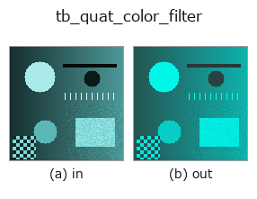

typed op• 資料種類:qimage → qimage
• 呼叫:fullseye.apply(img, "tb_quat_color_filter", a=0.5, b=0.5)(2-D 的模型是一張圖 + 兩個純量旋鈕 a,b∈[0,1])

*圖為在 128×128 合成輸入上實際執行的輸出。左為輸入，右為輸出。點雲以俯視散點顯示(亮度 = z)，一維序列為折線，體資料為沿 z 的最大值投影，影片為中間影格，複數影像為振幅；無法成像的回傳值直接顯示數值。*
*旋鈕 a 不改變輸出(實測: 0.1 / 0.5 / 0.9 相同)。*
*旋鈕 b 不改變輸出(實測: 0.1 / 0.5 / 0.9 相同)。*
階段(前置運算子 → 本運算子，由左至右):
▸ tb_quat_color_filter: 處理階段 (文件網站)
換別的影像(合成場景 / 照片 / 硬幣。上排為輸入，下排為對應輸出。旋鈕取預設):
▸ tb_quat_color_filter: 其他輸入影像 (文件網站)
精確地保留或去除某一顏色方向。→ (H, W, 4)。
> 以下的詳細說明為原文 —— 摘要與標題已翻譯。
mode="remove" returns v - (v.g) g for the unit RGB direction g:
the component along g is exactly zero everywhere afterwards, to machine precision (measured max residual 5.8e-16 and 6.5e-16 on two random colour images — seed-dependent only at the 1e-16 level), and remove + keep reproduces the input to 0.0 exactly. mode="keep" returns the complementary (v.g) g. The scalar part is passed through untouched in both.
There is no default mode. The two are opposites, both return a valid picture, and neither raises — so choosing for the caller would be a coin flip that never announces itself.
The remove branch is the specular-invariant projection of Mallick et al. (2005), which this repository already implements as specularity.specular_free_transform for the rgbimage sort. Rather than write the same three lines twice, this operator *delegates* to it — so agreement between the two sorts is by construction rather than by luck, and a future fix in one is a fix in both. What is added here is the keep branch (which has no counterpart there) and the qimage sort, so the projection composes with quat_color_rotate and qft2.
A per-channel filter applies a diagonal matrix, and I - g g^T is diagonal only when g is a coordinate axis. For g = (1,1,1)/sqrt(3) — remove the grey axis, i.e. keep only chromatic content — the *best possible* diagonal approximation is off by ||P - diag(P)||_2 = 0.666667 in operator norm. Concretely, a pure red pixel (1, 0, 0) must become (0.666667, -0.333333, -0.333333); the best diagonal filter can only reach (0.666667, 0, 0), an error of 0.471405 — it cannot put anything into the green and blue channels, because it multiplies each channel by a number and both start at zero. The impossibility is structural, not a tuning gap. (A full 3x3 colour matrix, of course, does it exactly; see quat_color_rotate for that half of the accounting.)
Raises ValueError: *qimage* is not a valid (H, W, 4) field; *direction_rgb* is not a finite non-zero 3-vector; *mode* is not 'remove' / 'keep'.
Typed bridge of the quat op quat_color_filter into the 2-D evolution registry: the same implementation, called under the op(v, a, b) convention. This op has no tunable parameter; a and b are unused.
• 範例資料目錄(下載 URL / 授權) —— 2-D 用 skimage.data(BSD/公有領域)加合成圖,3-D 給出真實資料源(Stanford/PDS 等)的下載 URL。
• 運算子來歷與參考文獻 —— 該運算子族所依據的研究/方法出處。
下面的程式已確認可以執行(與圖相同的輸入)。在 Studio 說明中，此區塊會變成按鈕，可當場載入並執行。
img_to_rgb 0.50 0.50 tb_rgb_to_quaternion 0.50 0.50 tb_quat_color_filter 0.50 0.50
下面的範例呼叫的是底層帳本運算子 quat_color_filter。此橋接運算子只是把同一實作適配為 fn(v, a, b) 慣例，行為完全相同(只是呼叫形式不同)。
• quaternion_monogenic — py -3.11 examples/quaternion_monogenic.py
qimage 作為輸入)identity · tb_quaternion_to_rgb · tb_quat_norm · tb_quat_conjugate_image · tb_quat_normalize_image · tb_monogenic_amplitude · tb_monogenic_phase · tb_monogenic_orientation
typed)tb_points_to_voxel · tb_estimate_point_normals · tb_iss_keypoints · tb_project_points · tb_render_point_depth · tb_statistical_outlier_removal · tb_radius_outlier_removal · tb_voxel_grid_downsample
*Provenance: ops.py — 2D 運算子登記表。本條目由 tools/opdocs.py md 自動產生(請勿手動編輯)。*
© 2026 Kazufumi Furuse — Fullseye operator documentation. Licensed under Apache-2.0.